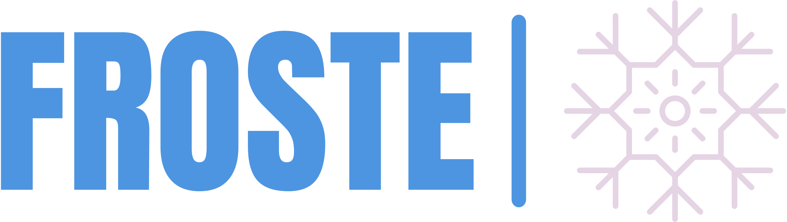
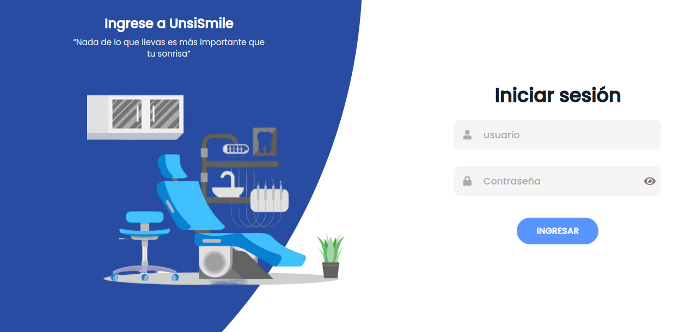

Acerca de mi
Soy Joel, un desarrollador backend con experiencia en el diseño e implementación de arquitecturas limpias, seguridad con JWT y Keycloak, automatización con CI/CD, y despliegue en entornos on-premise. Actualmente lidero un proyecto institucional para la digitalización de expedientes clínicos en una clínica universitaria, aplicando buenas prácticas de desarrollo, metodologías ágiles y tecnologías modernas como Spring Boot y Docker.

Desarrollador web.
Como programador web, tengo experiencia tanto en el desarrollo Front-End como en el Back-End. Me desenvuelvo con soltura en una variedad de tecnologías y herramientas fundamentales para la creación de aplicaciones web. En el ámbito del Back-End, he trabajado extensamente con lenguajes como Java (tanto puro como en conjunción con el framework Spring) y PHP (tanto puro como con el framework Laravel), además de tener experiencia con bases de datos relacionales como MySQL, PostgreSQL y MariaDB.
- Teléfono: +52 564 898 8402
- Correo: figueroamartinezjoelfrancisco@gmail.com
Estoy emocionado por seguir creciendo como desarrollador, aprendiendo nuevas tecnologías y enfrentando proyectos apasionantes. Siempre estoy abierto a nuevas oportunidades y desafíos que me permitan aplicar mis habilidades y seguir aprendiendo en el proceso.
Habilidades
Backend
Java / Spring Boot / Spring Security Groovy / Grails PHP / Laravel JWT / KeycloakDevOps & Infraestructura
Docker / Docker Compose / Docker Swarm Nginx Linux CI/CD (GitHub Actions, Bitbucket Pipelines)Bases de Datos
MySQL PostgreSQL MariaDB JPA / HibernateFrontend & Otros
HTML / CSS / JavaScript Angular Jira AutomationCV
Resumen
Joel Francisco Figueroa Martínez
Desarrollador Backend con experiencia en diseño de APIs REST seguras, arquitectura limpia, automatización con CI/CD y despliegue en entornos on-premise. Líder técnico en proyectos institucionales de alto impacto con enfoque en seguridad, modelado de datos y buenas prácticas de desarrollo.
- 📞 +52 564 898 8402
- 📧 figueroamartinezjoelfrancisco@gmail.com
Educación
Licenciatura en Informática
2019 - Actualidad
Universidad de la Sierra Sur
He desarrollado proyectos reales durante mi formación, consolidando habilidades técnicas y de liderazgo en desarrollo web fullstack, diseño de bases de datos relacionales y metodologías ágiles.
Certificación en UX Design
Nov 2022 - Mar 2023
Estudié diseño centrado en el usuario, prototipado, investigación y pruebas con usuarios. Completé 3 proyectos que priorizan la experiencia y accesibilidad.
Experiencia Profesional
Desarrollador Backend
Jul 2024 - Sep 2024
Meltsan Solutions
- Responsabilidades técnicas: I Desarrollé servicios para un microservicio de seguridad utilizando Kotlin y Spring Framework. Configuré autenticación/autorización mediante Keycloak y apoyé al equipo DevOps en pipelines de CI/CD usando Gradle.
- Colaboración: Coordiné con el líder de proyecto y el equipo FrontEnd para alinear funcionalidades, y brindé soporte técnico en la integración de seguridad y despliegue.
- Stack: Spring Framework, JPA, Kotlin, MySQL, Git, GitHub, GitHub Actions, Keycloak, Postman, Gradle.
Desarrollador Backend
Jul 2023 - Sep 2023
Sys Technology and Innovation
- Responsabilidades técnicas: Implementé una arquitectura REST con Grails desde cero; desarrollé algoritmos para inserción masiva de datos desde Excel a MySQL; automatización de análisis estadístico.
- Colaboración: Coordinación con equipo frontend para integración de servicios; entrega de soluciones alineadas a requerimientos gubernamentales.
- Stack: Groovy, Spring Framework, JPA, MySQL, Bitbucket, Postman.
Líder Técnico - Proyecto UnsiSmile
Actualmente
Universidad de la Sierra Sur
- Responsabilidades técnicas: Diseñé una arquitectura basada en Clean Architecture y modelo en capas para una aplicación de gestión de expedientes clínicos. Implementé seguridad con JWT, contenedores Docker, y despliegue en infraestructura on-premise con Docker Swarm.
- Colaboración: Lideré requerimientos con usuarios finales (clínica), gestioné el backlog con Jira Automation y metodologías ágiles.
- Stack: Java, Spring Boot, Spring Security, JPA, MariaDB, Docker, GitHub, Jira, Postman.
Desarrollador Fullstack - Unsis-Clubs
2023
Universidad de la Sierra Sur
- Responsabilidades técnicas: Desarrollo web con Laravel, diseño del modelo de datos, implementación de middlewares de seguridad.
- Colaboración: Proyecto en equipo con entrega institucional formal y propuesta de adopción.
- Stack: Laravel, PHP, MySQL, Composer, GitHub.
Portfolio

UnsiSmile
Digitalización de expedientes clínicos para clínica universitaria de odontología
Contacto
Correo:
figueroamartinezjoelfrancisco@gmail.com